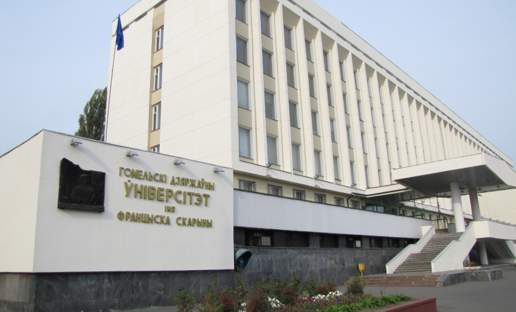
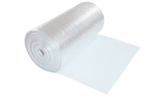
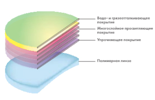
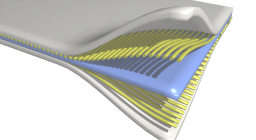
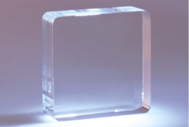
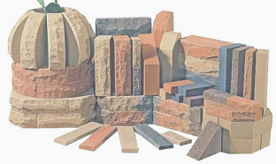
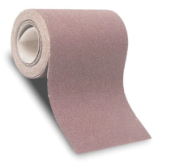
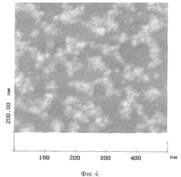

История пнил
Проблемная научно-исследовательская лаборатория (ПНИЛ) создана 1 октября 1980 г. на основании распоряжения Совета Министров республики от 22 июля 1980 года №591 и приказа Минвуза от 22 августа 1980 года №495 в целях широкого привлечения профессорско-преподавательского состава, докторантов, аспирантов и студентов университета к исследованиям в рамках актуальных научных направлений.
Первоначально лаборатория занималась исследованиями физико-химической механики процессов трения. Первым научным руководителем лаборатории был академик, доктор физико-математических наук, профессор Б.В. Бокуть, являвшийся в то время также ректором ГГУ. Ученые лаборатории разработали ряд экспериментальных приборов для исследования свойств покрытий материалов, диагностики и активного контроля различных машин, технологических процессов. Под руководством доктора технических наук, профессора И.М. Мельниченко (с 1988 по 2001 гг.) лаборатория получила новое научное направление: создание перспективных материалов на базе золь-гель технологии.

Проводимые научные исследования направлены на создание принципиально новых наукоемких конкурентоспособных материалов и технологий в рамках приоритетных для Республики Беларусь научных направлений. В настоящее время руководителем лаборатории является ученик И.М. Мельниченко, кандидат физико-математических наук В.Е.Гайшун.
На сегодняшний день Проблемной научно-исследовательской лабораторией перспективных материалов (ПНИЛ ПМ) накоплен значительный опыт в области высоких технологий
За время существования лаборатории её сотрудниками защищены 4 докторские и 9 кандидатских диссертаций, получено более 80 свидетельств на изобретения, патенты и промышленные образцы. Разработки ПНИЛ отмечены дипломами и медалями международных выставок, внедрены в производство на десятках предприятий Беларуси и Российской Федерации
Получение новых материалов и изделий на базе золь-гель технологий:
На сегодняшний день Проблемной научно-исследовательской лабораторией перспективных материалов (ПНИЛ ПМ) накоплен значительный опыт в области высоких технологий получения новых материалов и изделий на базе золь-гель технологий:

тепло- и шумо-изоляционные материалы

покрытия

композиты

кварцевые стекла

керамика

абразивный инструмент

стабилизированные